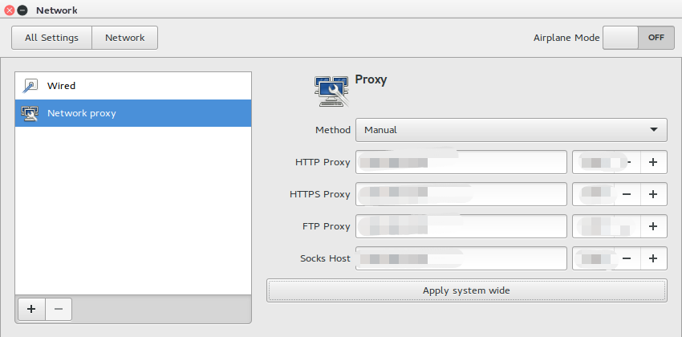

背景
通过battery historian，分析设备异常耗电问题。 但是在github开源的battery historian工具在2017年后就就没有再进行维护了，出现高Android版本无法解析的问题，在Android官网发现battery historian一直在进行更新，但是只能通过docker的方式来运行，不能通过开源代码配置环境了。想想比较坑。
所以需求就由此而生，需要搭建docker来运行battery historian。
搭建方法地址如下：
https://developer.android.com/studio/profile/battery-historian?hl=zh_cn
其中遇到的问题有如下几点：
- 如果在window下面搭建的话，安装docker参考 https://www.runoob.com/docker/windows-docker-install.html （通过此方法可以搭建成功，但是存在的问题就是在window下面开启了Hyper和VMware不兼容，无法同时使用VMware）
- 当然在第1点中的问题也是可以得到解决的，搜到了如下链接介绍docker和VMware共存问题，但是还没有开始尝试，就已经屈服了，原因是突然发现在window下配置好docker以后，内存占用太高，开机后没有运行其他程序，电脑内存都已经使用了7.3G以上，太耗内存了（刚开始还以为是window10更新导致的内存占用问题，后面把Hyper-V关闭了后重启电脑，开机后内存占用正常，大概3.4G的样子）https://qymua.com/2019/08/22/%E6%B5%85%E8%B0%88Docker-for-Windows%E4%B8%8EVMware%E5%85%B1%E5%AD%98/
基于内存消耗过高(即使解决了Docker与VMware共存问题，同时使用的时候会导致更高的内存占用，电脑吃不消，毕竟笔记本才从8G升到16G)，以及本人还想继续使用VMware等原因，所以放弃了直接在windows下搭建环境的选择，决定关闭Hyper-V.
- 所以剩下的选择就是在VMware虚拟机中搭建环境了，此时遇到的问题是如果让虚拟机通过windows的代理上网。
VMware使用windows代理上网
- 在window的ss/ssr中允许来自局域网的连接，这里就不贴图了，在设置里面找一找就找到了。
- 查看windows的IP地址，通过命令窗口查询即可
在ubuntu中设置网络代理，如下（IP地址是windows的以太网或者WIFI的IP，端口是ss/ssr的端口）

这个时候就可以通过浏览器访问外网了。
此时通过apt-get install仍然无法外网，所以还需要接着配置，将代理设置到shell窗口上面。
在网上搜了都说直接用https代理就可以了贴个链接，让linux的终端走代理的几种方法https://blog.fazero.me/2015/09/15/%E8%AE%A9%E7%BB%88%E7%AB%AF%E8%B5%B0%E4%BB%A3%E7%90%86%E7%9A%84%E5%87%A0%E7%A7%8D%E6%96%B9%E6%B3%95/ 但是本人的代理是需要输入用户名和密码的，所以需要输入的代理格式是
export http_proxy=http://username:passwd@ip:port
export https_proxy=https://username:passwd@ip:port
配置好了始终无法通过shell访问外网，最后终于发现了根本原因是：遇到了一个比较大的坑，折腾了好久，最后终于在网络上不知道哪个地址的地方看到了一句属于密码的适合特殊符号好用转义符号，所以也依葫芦画瓢，将输入用户名的特殊符号加入了转义【@ -> %40】，配置好后采用curl -v www.google.comn能够正常访问google网站，所以算是配置好了。
为了方便在想走代理的时候才走代理，所以在.bashrc中配置了 快捷命令打开代理和关闭代理。
- apt的代理方式同第4点一样的配置就好在第四点的链接中也有介绍。